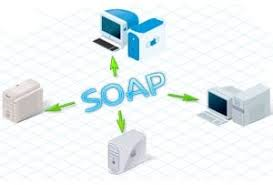

ES UN PROTOCOLO DE COMUNICACIÓN BASADO EN XML QUE PERMITE QUE APLICACIONES EN DIFERENTES PLATAFORMAS Y SE COMUNIQUEN ENTRE SÍ
DE MANERA INDEPENDIENTE DEL LENGUAJE DE PROGRAMACIÓN Y EL SISTEMA OPERATIVO UTILIZADOS.

CARACTERISTICAS DE SOAP
BASADO EN XML: SOAP UTILIZA XML COMO SU FORMATO DE MENSAJE, LO QUE LO HACE LEGIBLE Y COMPRENSIBLE TANTO PARA HUMANOS COMO PARA MÁQUINAS.
PROTOCOLO INDEPENDIENTE: PUEDE UTILIZARSE CON UNA VARIEDAD DE PROTOCOLOS, COMO HTTP, SMTP Y MÁS.
PLATAFORMA INDEPENDIENTE: SOAP ES INDEPENDIENTE DE LA PLATAFORMA Y EL LENGUAJE DE PROGRAMACIÓN.
LENGUAJE NEUTRO: SOAP NO FAVORECE NINGÚN LENGUAJE DE PROGRAMACIÓN EN PARTICULAR Y SE PUEDE UTILIZAR CON CUALQUIER LENGUAJE QUE ADMITA LA CREACIÓN Y EL ANÁLISIS DE MENSAJES XML.
EXTENSIBILIDAD: SOAP PERMITE LA INCLUSIÓN DE INFORMACIÓN ADICIONAL EN LOS MENSAJES.
VENTAJAS
LEGIBILIDAD: LOS MENSAJES SOAP SON LEGIBLES POR HUMANOS DEBIDO A SU FORMATO XML.
ESTRUCTURA PREDEFINIDA: SOAP DEFINE UNA ESTRUCTURA DE MENSAJE CLARA, LO QUE FACILITA LA COMPRENSIÓN Y EL DESARROLLO DE APLICACIONES.
AMPLIA ADOPCIÓN: ES COMPATIBLE CON NUMEROSAS TECNOLOGÍAS Y PLATAFORMAS.
DESVENTAJAS
OVERHEAD: EL FORMATO XML PUEDE AGREGAR SOBRECARGA EN TÉRMINOS DE TAMAÑO DE MENSAJE Y PROCESAMIENTO.
COMPLEJIDAD: AUNQUE SOAP ES EXTENSIBLE, SU FLEXIBILIDAD PUEDE LLEVAR A UNA MAYOR COMPLEJIDAD EN LA IMPLEMENTACIÓN Y LA COMPRENSIÓN.
VELOCIDAD DE DESARROLLO: EN ALGUNOS CASOS, PUEDE LLEVAR MÁS TIEMPO DESARROLLAR SERVICIOS WEB BASADOS EN SOAP EN COMPARACIÓN CON TECNOLOGÍAS MÁS MODERNAS.